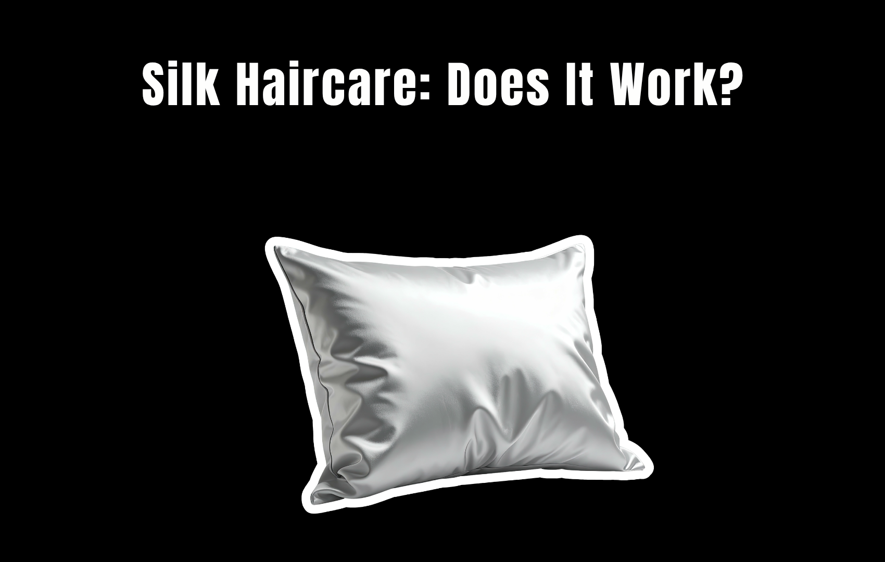
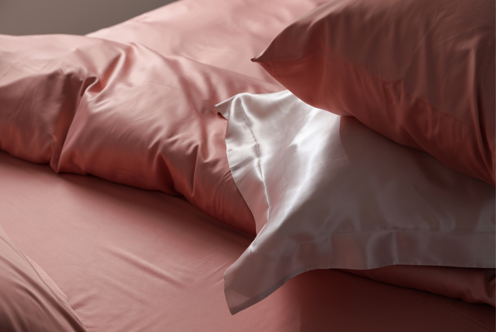
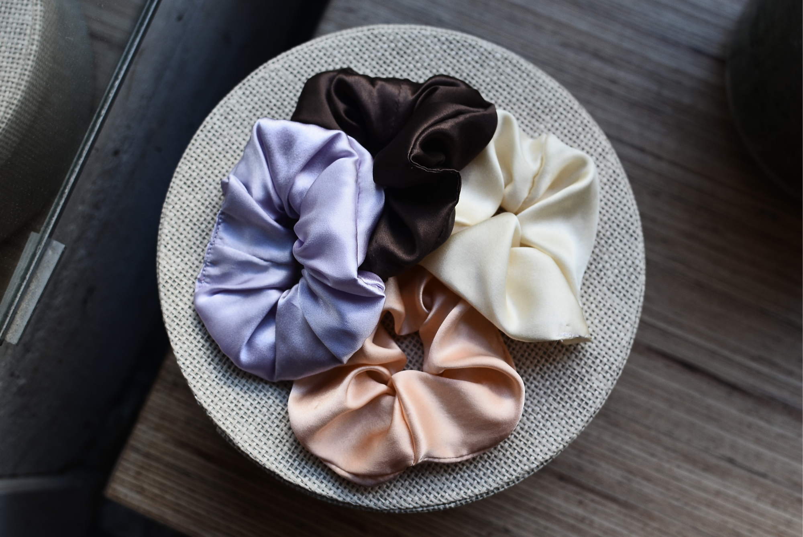

Silk bonnets. Silk pillowcases. Silk scrunchies.
The haircare industry has turned sleeping in silk into something of a ritual. Scroll through TikTok and you’ll find claims that a silk bonnet can prevent breakage, make hair grow longer, stop split ends, preserve moisture, and even make your hair “stronger” overnight.
There is some science behind the trend.
But “reduces friction” and “strengthens your hair” are two very different claims.
So, do silk hair products actually make your hair stronger?
Not exactly. But they may help you lose less of the hair strength you already have.
First, What Does “Hair Strength” Actually Mean?
Your hair strand is made primarily of keratin, a protein that gives it its structure and strength. Once hair emerges from the scalp, the strand is essentially non-living tissue. It can’t heal itself the way your skin can.
That means a silk bonnet isn’t going to rebuild a damaged hair shaft or permanently repair a split end.
What it can potentially do is reduce one of the things that contributes to mechanical damage: friction.
And this is where the silk trend gets more interesting.
The Real Benefit of Silk Is Friction — Not Magic
Think about what happens while you sleep.
Your hair moves against your pillowcase every time you turn your head. Hair can rub against the fabric, become tangled, and experience repeated pulling and friction.
Rougher fabrics can create more resistance against the hair. Smoother surfaces allow the hair to move more easily.
The American Academy of Dermatology specifically recommends satin or silk bonnets and pillowcases as an option for reducing friction and helping preserve curls. It notes that reducing friction can make hair less frizzy and easier to break.
So the potential benefit isn’t that silk is somehow penetrating the hair and making the strand stronger.
It’s that you’re putting the hair through less mechanical stress.
And less mechanical stress can mean less breakage over time.
But Here’s Where the Marketing Gets Ahead of the Science
Search for “silk bonnet hair growth” and you’ll find plenty of dramatic before-and-after claims.
This is where we’d pump the brakes.
There aren’t robust clinical trials showing that sleeping on silk directly makes hair grow faster or increases the intrinsic strength of the hair shaft. Dermatologists have pointed out that much of the enthusiasm surrounding silk pillowcases comes from the known properties of smoother fabrics rather than large, long-term clinical studies on silk products themselves.
That’s an important distinction.
If your hair is breaking less, you may eventually retain more length.
That can make your hair look longer, fuller, or healthier.
But that’s not the same thing as making your hair grow faster.
Think of It This Way
The accurate version
Less breakage → more length retained.
The version being sold to you
Silk → faster hair growth.
Those are two completely different claims.
What About Silk Pillowcases?

This is probably the easiest silk hair product to justify.
A pillowcase doesn’t just affect your hair — it affects what happens to your hair for several hours every night.
Silk has a smooth surface that creates less friction than many traditional pillowcase materials. It also tends to absorb less moisture than cotton.
That can be particularly useful if your hair is:
- Curly or coily.
- Dry or highly porous.
- Easily tangled.
- Color-treated.
- Chemically processed.
- Fine or fragile.
- Prone to frizz.
The less your hair catches, snags, and tangles while you’re sleeping, the less aggressive detangling you may have to do the next morning.
And sometimes the brushing you do after waking up may be just as relevant as what happened overnight.
What About Silk Bonnets?
A bonnet takes the idea one step further.
Instead of allowing your hair to move freely across the pillowcase, a bonnet keeps the hair contained while providing a smooth surface around it.
For curly and textured hair especially, this can help preserve a hairstyle while reducing friction. The American Academy of Dermatology lists satin or silk bonnets among strategies that can reduce friction and preserve curls while sleeping.
But there’s a catch.
A bonnet isn’t automatically gentle just because it’s made from silk.
If the elastic is extremely tight, if the bonnet pulls at your edges, or if your hair is gathered into a tight style underneath it, you’re introducing another form of mechanical stress.
In other words:
A loose, comfortable bonnet is a very different proposition from one that leaves an indentation around your hairline every morning.
And Then There’s the Silk Scrunchie

This one makes sense for a slightly different reason.
Every time you put your hair into a ponytail, you’re creating tension at the same area of the hair.
A traditional elastic can grip the hair tightly. Taking it out can pull on strands and contribute to breakage, especially when the hair is already fragile.
A silk or satin scrunchie can provide a smoother surface and may be gentler on the hair than a rougher, tighter hair tie.
But again, the word “silk” doesn’t cancel out tension.
A very tight silk scrunchie can still put stress on the hair.
The biggest benefit may simply come from using a hair tie that doesn’t aggressively grip, tug, or snag your strands.
Silk vs. Satin: Do You Actually Need Silk?
Here’s another place where beauty marketing can get confusing.
Silk and satin aren’t the same thing.
| Silk | Satin | |
|---|---|---|
| What it is | A natural fiber | A type of weave |
| What it can be made of | Silk | Different fibers, including polyester |
| Contains silk? | Yes | Not necessarily |
| What matters for friction | Surface smoothness | Surface smoothness |
That means a product can be marketed as “satin” without containing silk at all.
And when it comes to reducing friction, the smoothness of the surface may be more important than whether the label says “100% silk.”
So if your goal is simply to reduce friction while sleeping, you don’t necessarily need the most expensive silk product on the market.
A smooth satin product can provide a similar mechanical benefit at a lower price.
The Biggest Myth: “Silk Repairs Your Hair”
No.
This is where we’d draw the line.
- A silk pillowcase can’t seal a split end.
- A silk bonnet can’t rebuild chemically damaged keratin.
- A silk scrunchie can’t reverse damage from years of heat styling.
What these products may do is help prevent additional mechanical damage.
That’s still useful.
If your hair is already severely damaged, changing your pillowcase isn’t going to undo the damage. Reducing heat, avoiding excessive chemical processing, handling hair gently, and getting rid of severely split ends may matter much more.
So, Is the Silk Hair Trend Worth It?
There’s truth behind it — just not quite the truth being advertised.
Silk and satin products aren’t miracle hair-strengthening treatments.
- They don’t stimulate the follicle.
- They don’t make hair grow faster.
- They don’t repair damaged strands.
What they can do is create a smoother environment for your hair, reducing friction, tangling, and some of the mechanical stress that can contribute to breakage.
That makes the trend particularly reasonable for people with hair that’s already prone to dryness, tangling, breakage, curls, or chemical damage.
So if you’ve been wondering whether your $80 silk pillowcase is secretly growing your hair while you sleep, probably not.
But if it’s helping you wake up with fewer tangles and less breakage?
That’s a claim with a little more truth behind it.
Sources: American Academy of Dermatology — guidance on reducing friction while sleeping, satin and silk bonnets and pillowcases for preserving curls, and tips for preventing hair damage and breakage.